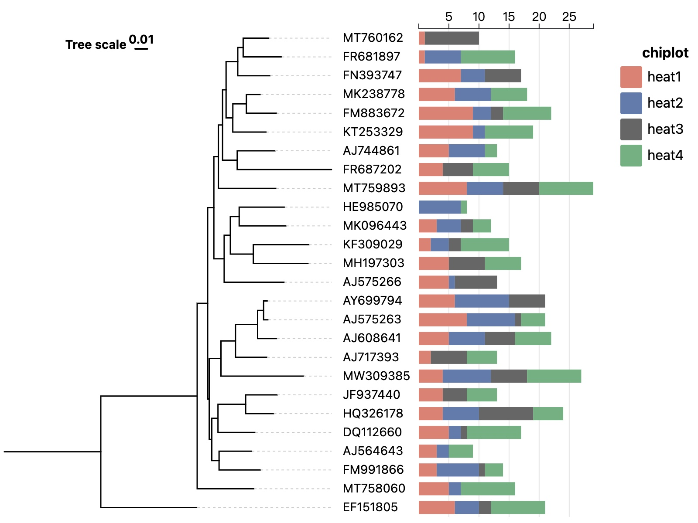
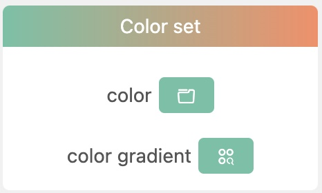
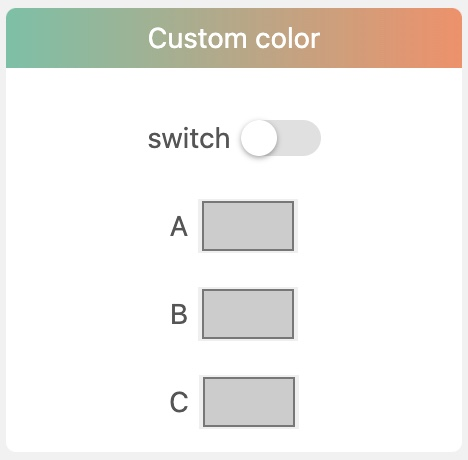
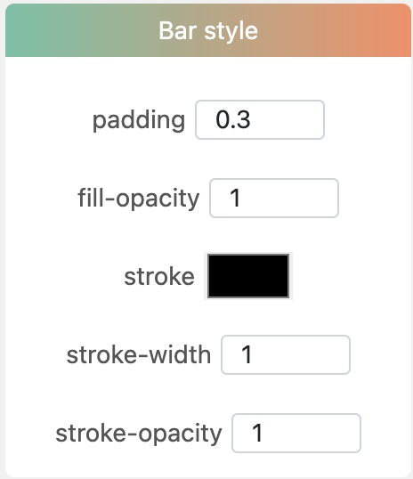

Layer data
- Example data
Multiple columns of numerical data are needed. Each column name is one category.
| Node IDs | component 1 | component 2 | component 3 | component 4 | ... |
|---|---|---|---|---|---|
| MT758060 | 5 | 13 | 33 | 46 | ... |
| EF151805 | 9 | 34 | 56 | 77 | ... |
| MW309385 | 12 | 33 | 66 | 88 | ... |
| AJ717393 | 13 | 22 | 77 | 66 | ... |
- TSV format
Node IDs component 1 component 2 component 3
EF151805 6 4 2
AY699794 6 9 6
AJ608641 5 6 5
JF937440 4 0 4
AJ744861 5 6 0
AJ564643 3 2 0
FN393747 7 4 6
AJ717393 2 0 6
MK238778 6 6 0
AJ575266 5 1 7
MT758060 5 2 0
MT760162 1 0 9
NR_025743 9 0 7
FM883672 9 3 2
HE985070 0 7 0
FR687202 4 0 5
KT253329 9 2 0
HQ326178 4 6 9
MT759893 8 6 6
KF309029 2 3 2
FM991866 3 7 1
MH197303 5 0 6
FR681897 1 6 0
MW309385 4 8 6
DQ112660 5 2 1
AJ575263 8 8 1
MK096443 3 4 2
Layer controlling attributes
canvas
xAxis
background
bar
Color set

color: Click this button to choose a default color set.
color gradient: Click this button to choose a default color set from a gradient color bar depending on the number of categories.
Custom color
switch: Whether to use custom color set.
All categories of that data column will be listed below followed by a color selector respectively. Click each color selector to select a color you like.
Bar style
padding: Adjust the spacing between two bars.
fill-opacity: Svg rect attribute.
stroke: Svg rect attribute.
stroke-width: Svg rect attribute.
stroke-opacity: Svg rect attribute.